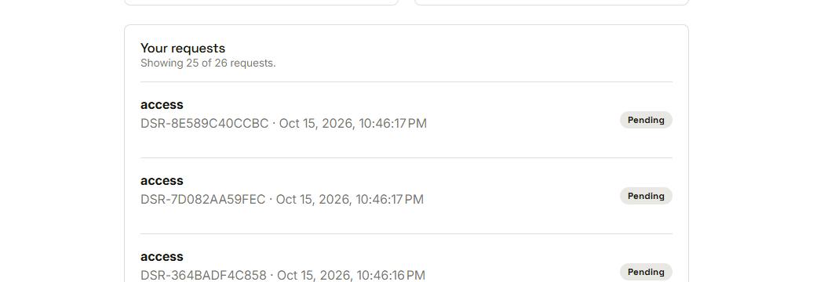
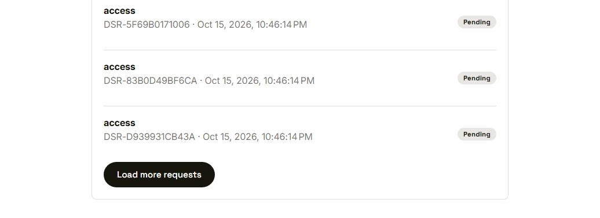
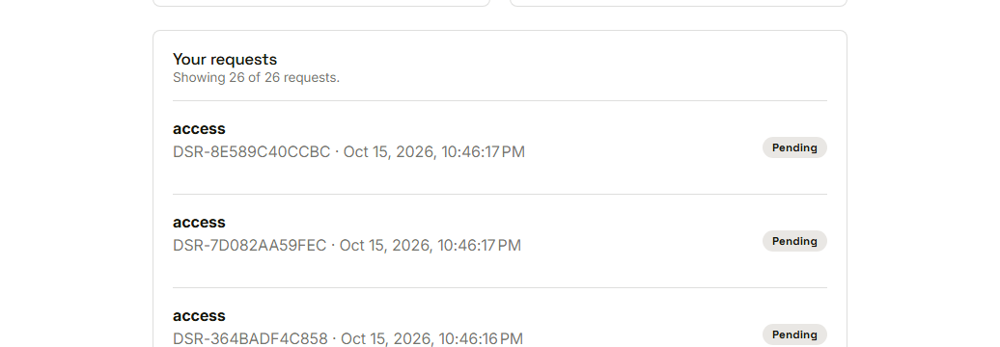

Waypoint · Video 106
Staying fast
Clear speed targets, and checks that enforce them
Four performance budgets
- Typical request answered in 300 milliseconds or less
- Nearly all requests in 800 milliseconds or less
- Lists and reports arrive in pages
- Main youth screen usable in about three seconds
- Many people at once, without more errors
Showing twenty-five of twenty-six

The first twenty-five only
Load more, when you want it

Each trip brings a limited amount
Showing twenty-six of twenty-six

Everything loaded, one page at a time
Checked automatically
- A load check simulates many signed-in readers
- It fails on median time, slow tail, errors or response size
- A browser test checks the youth screen on a throttled device
Things to remember
- 300 milliseconds typical, 800 for nearly all requests
- Long lists arrive in pages
- Main youth screen usable in about three seconds
- Automated checks catch a slowdown early